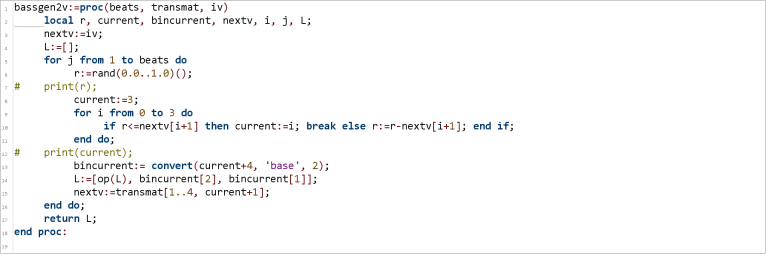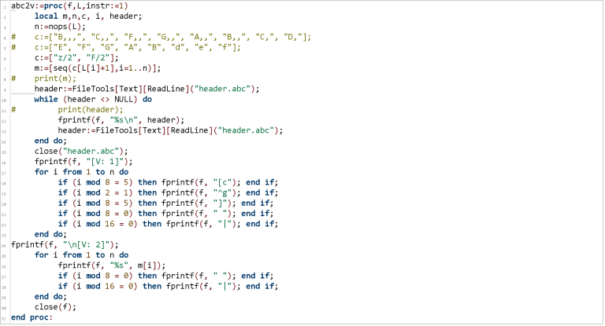
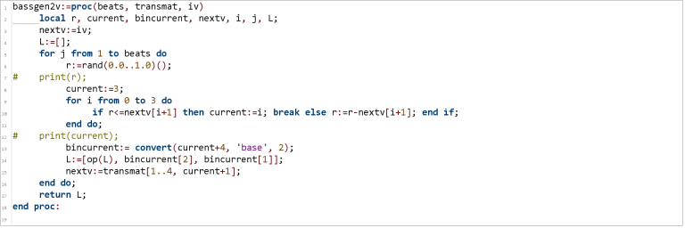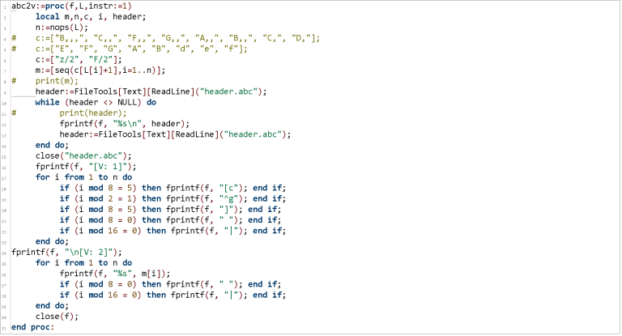
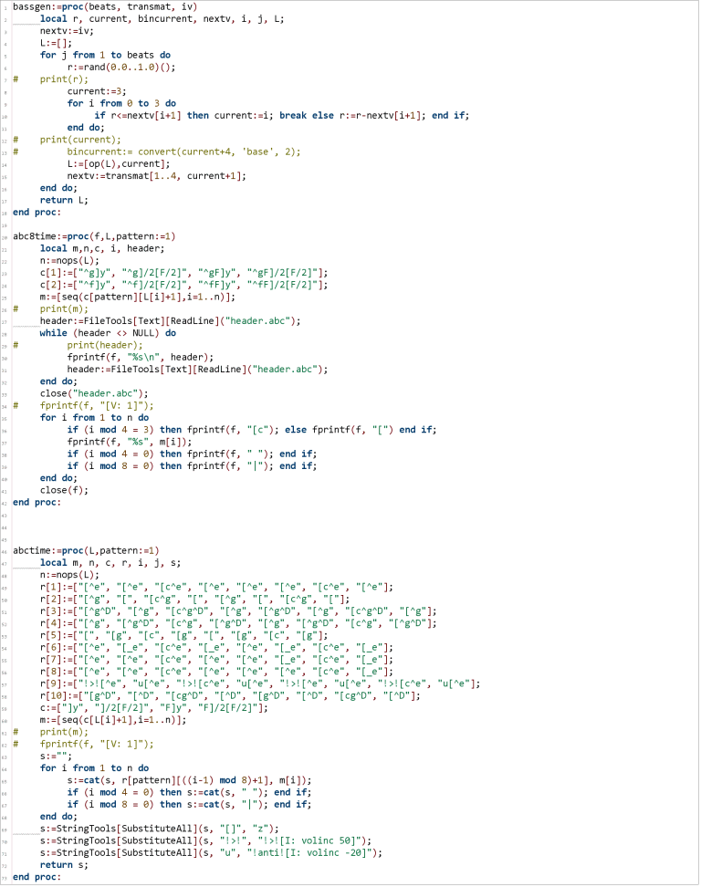


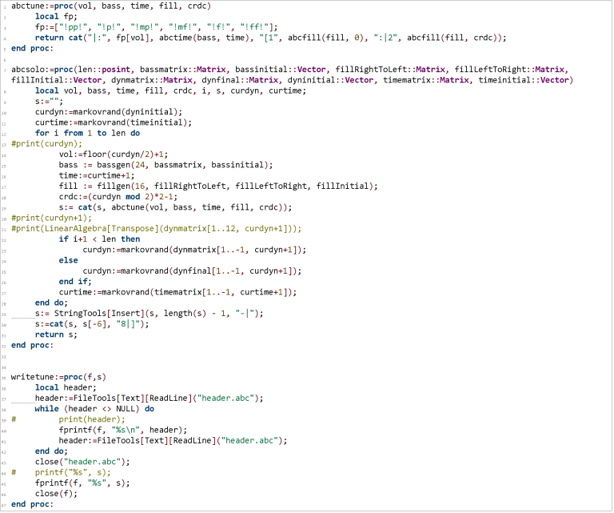
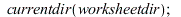
| (1) |

| (2) |
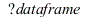
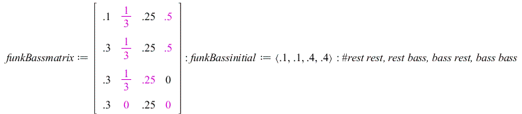`(.1, .1, .4, .4)..." align="center" border="0">
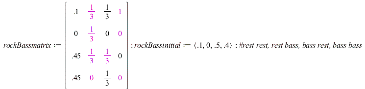`(..." align="center" border="0">
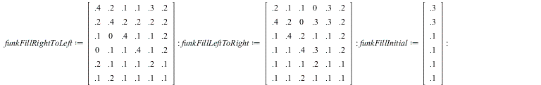
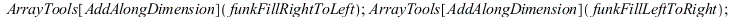
| (3) |
![rockFillRightToLeft := rtable(1 .. 6, 1 .. 6, [[.4, .2, .1, .1, .3, 0], [.2, .4, .2, .2, .2, 0], [.1, 0, .4, .1, .1, 0], [0, .1, .1, .4, .1, 0], [.2, .1, .1, .1, .2, 0], [.1, .2, .1, .1, .1, 1.0]], su...](images/markovride-abc_20.gif)


| (4) |
![dynMatrix := rtable(1 .. 12, 1 .. 12, [[0, 0, .2, .2, .1, .1, 0, 0, 0, 0, 0, 0], [0, 0, .2, .1, .1, .1, 0, 0, 0, 0, 0, 0], [.2, .2, 0, 0, .2, .1, .1, .1, .1, .2, .1, .2], [.2, .2, 0, 0, .2, .1, .1, .1...](images/markovride-abc_25.gif)

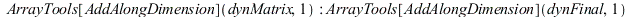
| (5) |

| (6) |

| 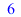 | (7) |

 |
![funkRideMatrix := rtable(1 .. 10, 1 .. 10, [[0, .1, .1, .1, .2, .2, .2, .2, 0, .2], [.2, 0, .2, .2, .1, .2, .2, .2, .2, .1], [.1, .1, 0, 0, .1, .1, .1, .1, .1, .1], [.1, .1, 0, 0, .1, .1, .1, .1, .1, ...](images/markovride-abc_35.gif)

![rockRideMatrix := rtable(1 .. 10, 1 .. 10, [[0, .1, .1, .1, .2, .2, .2, .2, 0, .2], [.2, 0, .2, .2, .1, .2, .2, .2, .2, .1], [.1, .1, 0, 0, .1, .1, .1, .1, .1, .1], [.1, .1, 0, 0, .1, .1, .1, .1, .1, ...](images/markovride-abc_37.gif)

| (8) |

 |
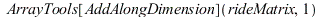
| 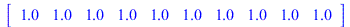 | (9) |

| (10) |
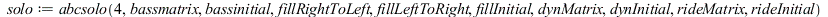
| (11) |


| 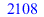 | (12) |

| (13) |

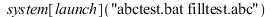
| 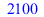 | (14) |

| (15) |


| 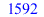 | (16) |

![I: volinc 50][^eF]/2[F/2]!anti![I: volinc -50][^e]y!>![I: volinc 50][c^eF]y!anti![I: volinc -50][^e]y !>![I: volinc 50][^eF]y!anti![I: volinc -50][^eF]/2[F/..." align="center" border="0"> ![I: volinc 50][^eF]/2[F/2]!anti![I: volinc -50][^e]y!>![I: volinc 50][c^eF]y!anti![I: volinc -50][^e]y !>![I: volinc 50][^eF]y!anti![I: volinc -50][^eF]/2[F/..." align="center" border="0"> ![I: volinc 50][^eF]/2[F/2]!anti![I: volinc -50][^e]y!>![I: volinc 50][c^eF]y!anti![I: volinc -50][^e]y !>![I: volinc 50][^eF]y!anti![I: volinc -50][^eF]/2[F/..." align="center" border="0"> ![I: volinc 50][^eF]/2[F/2]!anti![I: volinc -50][^e]y!>![I: volinc 50][c^eF]y!anti![I: volinc -50][^e]y !>![I: volinc 50][^eF]y!anti![I: volinc -50][^eF]/2[F/..." align="center" border="0"> |
(17) |
![I: volinc 50][^eF]/2[F/2]!anti![I: volinc -50][^e]y!>![I: volinc 50][c^eF]y!anti![I: volinc -50][^e]y !>![I: volinc 50][^eF]y!anti![I: volinc -50][^eF]/2[F/2]!>![I: volinc 50][c^..." align="center" border="0">
![I: volinc 50][^eF]/2[F/2]!anti![I: volinc -50][^e]y!>![I: volinc 50][c^eF]y!anti![I: volinc -50][^e]y !>![I: volinc 50][^eF]y!anti![I: volinc -50][^eF]/2[F/2]!>![I: volinc 50][c^..." align="center" border="0">
![I: volinc 50][^eF]/2[F/2]!anti![I: volinc -50][^e]y!>![I: volinc 50][c^eF]y!anti![I: volinc -50][^e]y !>![I: volinc 50][^eF]y!anti![I: volinc -50][^eF]/2[F/2]!>![I: volinc 50][c^..." align="center" border="0">
![I: volinc 50][^eF]/2[F/2]!anti![I: volinc -50][^e]y!>![I: volinc 50][c^eF]y!anti![I: volinc -50][^e]y !>![I: volinc 50][^eF]y!anti![I: volinc -50][^eF]/2[F/2]!>![I: volinc 50][c^..." align="center" border="0">
![I: volinc 50][^eF]/2[F/2]!anti![I: volinc -50][^e]y!>![I: volinc 50][c^eF]y!anti![I: volinc -50][^e]y !>![I: volinc 50][^eF]y!anti![I: volinc -50][^eF]/2[F/2]!>![I: volinc 50][c^..." align="center" border="0">
![I: volinc 50][^eF]/2[F/2]!anti![I: volinc -50][^e]y!>![I: volinc 50][c^eF]y!anti![I: volinc -50][^e]y !>![I: volinc 50][^eF]y!anti![I: volinc -50][^eF]/2[F/2]!>![I: volinc 50][c^..." align="center" border="0">
![I: volinc 50][^eF]/2[F/2]!anti![I: volinc -50][^e]y!>![I: volinc 50][c^eF]y!anti![I: volinc -50][^e]y !>![I: volinc 50][^eF]y!anti![I: volinc -50][^eF]/2[F/2]!>![I: volinc 50][c^..." align="center" border="0">
![I: volinc 50][^eF]/2[F/2]!anti![I: volinc -50][^e]y!>![I: volinc 50][c^eF]y!anti![I: volinc -50][^e]y !>![I: volinc 50][^eF]y!anti![I: volinc -50][^eF]/2[F/2]!>![I: volinc 50][c^..." align="center" border="0"> ![I: volinc 50][^eF]/2[F/2]!anti![I: volinc -50][^e]y!>![I: volinc 50][c^eF]y!anti![I: volinc -50][^e]y !>![I: volinc 50][^eF]y!anti![I: volinc -50][^eF]/2[F/2]!>![I: volinc 50][c^..." align="center" border="0">
![I: volinc 50][^eF]/2[F/2]!anti![I: volinc -50][^e]y!>![I: volinc 50][c^eF]y!anti![I: volinc -50][^e]y !>![I: volinc 50][^eF]y!anti![I: volinc -50][^eF]/2[F/2]!>![I: volinc 50][c^..." align="center" border="0"> ![I: volinc 50][^eF]/2[F/2]!anti![I: volinc -50][^e]y!>![I: volinc 50][c^eF]y!anti![I: volinc -50][^e]y !>![I: volinc 50][^eF]y!anti![I: volinc -50][^eF]/2[F/2]!>![I: volinc 50][c^..." align="center" border="0">
![I: volinc 50][^eF]/2[F/2]!anti![I: volinc -50][^e]y!>![I: volinc 50][c^eF]y!anti![I: volinc -50][^e]y !>![I: volinc 50][^eF]y!anti![I: volinc -50][^eF]/2[F/2]!>![I: volinc 50][c^..." align="center" border="0">
![I: volinc 50][^eF]/2[F/2]!anti![I: volinc -50][^e]y!>![I: volinc 50][c^eF]y!anti![I: volinc -50][^e]y !>![I: volinc 50][^eF]y!anti![I: volinc -50][^eF]/2[F/2]!>![I: volinc 50][c^..." align="center" border="0">
![I: volinc 50][^eF]/2[F/2]!anti![I: volinc -50][^e]y!>![I: volinc 50][c^eF]y!anti![I: volinc -50][^e]y !>![I: volinc 50][^eF]y!anti![I: volinc -50][^eF]/2[F/2]!>![I: volinc 50][c^..." align="center" border="0"> ![I: volinc 50][^eF]/2[F/2]!anti![I: volinc -50][^e]y!>![I: volinc 50][c^eF]y!anti![I: volinc -50][^e]y !>![I: volinc 50][^eF]y!anti![I: volinc -50][^eF]/2[F/2]!>![I: volinc 50][c^..." align="center" border="0">
![I: volinc 50][^eF]/2[F/2]!anti![I: volinc -50][^e]y!>![I: volinc 50][c^eF]y!anti![I: volinc -50][^e]y !>![I: volinc 50][^eF]y!anti![I: volinc -50][^eF]/2[F/2]!>![I: volinc 50][c^..." align="center" border="0">
| ![I: volinc 50][^eF]/2[F/2]!anti![I: volinc -50][^e]y!>![I: volinc 50][c^eF]y!anti![I: volinc -50][^e]y !>![I: volinc 50][^eF]y!anti![I: volinc -50][^eF]/..." align="center" border="0"> ![I: volinc 50][^eF]/2[F/2]!anti![I: volinc -50][^e]y!>![I: volinc 50][c^eF]y!anti![I: volinc -50][^e]y !>![I: volinc 50][^eF]y!anti![I: volinc -50][^eF]/..." align="center" border="0"> ![I: volinc 50][^eF]/2[F/2]!anti![I: volinc -50][^e]y!>![I: volinc 50][c^eF]y!anti![I: volinc -50][^e]y !>![I: volinc 50][^eF]y!anti![I: volinc -50][^eF]/..." align="center" border="0"> |
(18) |
![I: volinc 50][^eF]/2[F/2]!anti![I: volinc -20][^e]y!>![I: volinc 50][c^eF]y!anti![I: volinc -20][^e]y !>![I: volinc 50][^eF]y!anti![I: volinc -20][^eF]/..." align="center" border="0"> ![I: volinc 50][^eF]/2[F/2]!anti![I: volinc -20][^e]y!>![I: volinc 50][c^eF]y!anti![I: volinc -20][^e]y !>![I: volinc 50][^eF]y!anti![I: volinc -20][^eF]/..." align="center" border="0"> |
(19) |
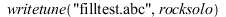

| 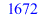 | (20) |
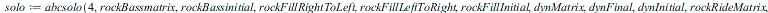
![I: volinc 50][^eF]/2[F/2]!anti![I: volinc -30][^e]y!>![I: volinc 50][c^eF]y!anti![I: volinc -30][^e]y !>![I: volinc 50][^eF]y!anti![I: volinc -30][^eF]/2[F/..." align="center" border="0"> ![I: volinc 50][^eF]/2[F/2]!anti![I: volinc -30][^e]y!>![I: volinc 50][c^eF]y!anti![I: volinc -30][^e]y !>![I: volinc 50][^eF]y!anti![I: volinc -30][^eF]/2[F/..." align="center" border="0"> ![I: volinc 50][^eF]/2[F/2]!anti![I: volinc -30][^e]y!>![I: volinc 50][c^eF]y!anti![I: volinc -30][^e]y !>![I: volinc 50][^eF]y!anti![I: volinc -30][^eF]/2[F/..." align="center" border="0"> ![I: volinc 50][^eF]/2[F/2]!anti![I: volinc -30][^e]y!>![I: volinc 50][c^eF]y!anti![I: volinc -30][^e]y !>![I: volinc 50][^eF]y!anti![I: volinc -30][^eF]/2[F/..." align="center" border="0"> ![I: volinc 50][^eF]/2[F/2]!anti![I: volinc -30][^e]y!>![I: volinc 50][c^eF]y!anti![I: volinc -30][^e]y !>![I: volinc 50][^eF]y!anti![I: volinc -30][^eF]/2[F/..." align="center" border="0"> ![I: volinc 50][^eF]/2[F/2]!anti![I: volinc -30][^e]y!>![I: volinc 50][c^eF]y!anti![I: volinc -30][^e]y !>![I: volinc 50][^eF]y!anti![I: volinc -30][^eF]/2[F/..." align="center" border="0"> ![I: volinc 50][^eF]/2[F/2]!anti![I: volinc -30][^e]y!>![I: volinc 50][c^eF]y!anti![I: volinc -30][^e]y !>![I: volinc 50][^eF]y!anti![I: volinc -30][^eF]/2[F/..." align="center" border="0"> ![I: volinc 50][^eF]/2[F/2]!anti![I: volinc -30][^e]y!>![I: volinc 50][c^eF]y!anti![I: volinc -30][^e]y !>![I: volinc 50][^eF]y!anti![I: volinc -30][^eF]/2[F/..." align="center" border="0"> |
(21) |
| (22) |
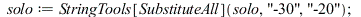
![I: volinc 50][^eF]/2[F/2]!anti![I: volinc -20][^e]y!>![I: volinc 50][c^eF]y!anti![I: volinc -20][^e]y !>![I: volinc 50][^eF]y!anti![I: volinc -20][^eF]/2[F/..." align="center" border="0"> ![I: volinc 50][^eF]/2[F/2]!anti![I: volinc -20][^e]y!>![I: volinc 50][c^eF]y!anti![I: volinc -20][^e]y !>![I: volinc 50][^eF]y!anti![I: volinc -20][^eF]/2[F/..." align="center" border="0"> |
(23) |
![I: volinc 50][^eF]/2[F/2]!anti![I: volinc -20][^e]y!>![I: volinc 50][c^eF]y!anti![I: volinc -20][^e]y !>![I: volinc 50][^eF]y!anti![I: volinc -20][^eF]/2[F/2]!>![I: volinc 50][c^e]y!..." align="center" border="0">
![I: volinc 50][^eF]/2[F/2]!anti![I: volinc -20][^e]y!>![I: volinc 50][c^eF]y!anti![I: volinc -20][^e]y !>![I: volinc 50][^eF]y!anti![I: volinc -20][^eF]/2[F/2]!>![I: volinc 50][c^e]y!..." align="center" border="0">
![I: volinc 50][^eF]/2[F/2]!anti![I: volinc -20][^e]y!>![I: volinc 50][c^eF]y!anti![I: volinc -20][^e]y !>![I: volinc 50][^eF]y!anti![I: volinc -20][^eF]/2[F/2]!>![I: volinc 50][c^e]y!..." align="center" border="0">
![I: volinc 50][^eF]/2[F/2]!anti![I: volinc -20][^e]y!>![I: volinc 50][c^eF]y!anti![I: volinc -20][^e]y !>![I: volinc 50][^eF]y!anti![I: volinc -20][^eF]/2[F/2]!>![I: volinc 50][c^e]y!..." align="center" border="0">
![I: volinc 50][^eF]/2[F/2]!anti![I: volinc -20][^e]y!>![I: volinc 50][c^eF]y!anti![I: volinc -20][^e]y !>![I: volinc 50][^eF]y!anti![I: volinc -20][^eF]/2[F/2]!>![I: volinc 50][c^e]y!..." align="center" border="0">
![I: volinc 50][^eF]/2[F/2]!anti![I: volinc -20][^e]y!>![I: volinc 50][c^eF]y!anti![I: volinc -20][^e]y !>![I: volinc 50][^eF]y!anti![I: volinc -20][^eF]/2[F/2]!>![I: volinc 50][c^e]y!..." align="center" border="0"> ![I: volinc 50][^eF]/2[F/2]!anti![I: volinc -20][^e]y!>![I: volinc 50][c^eF]y!anti![I: volinc -20][^e]y !>![I: volinc 50][^eF]y!anti![I: volinc -20][^eF]/2[F/2]!>![I: volinc 50][c^e]y!..." align="center" border="0">
![I: volinc 50][^eF]/2[F/2]!anti![I: volinc -20][^e]y!>![I: volinc 50][c^eF]y!anti![I: volinc -20][^e]y !>![I: volinc 50][^eF]y!anti![I: volinc -20][^eF]/2[F/2]!>![I: volinc 50][c^e]y!..." align="center" border="0"> ![I: volinc 50][^eF]/2[F/2]!anti![I: volinc -20][^e]y!>![I: volinc 50][c^eF]y!anti![I: volinc -20][^e]y !>![I: volinc 50][^eF]y!anti![I: volinc -20][^eF]/2[F/2]!>![I: volinc 50][c^e]y!..." align="center" border="0">
![I: volinc 50][^eF]/2[F/2]!anti![I: volinc -20][^e]y!>![I: volinc 50][c^eF]y!anti![I: volinc -20][^e]y !>![I: volinc 50][^eF]y!anti![I: volinc -20][^eF]/2[F/2]!>![I: volinc 50][c^e]y!..." align="center" border="0">
![I: volinc 50][^eF]/2[F/2]!anti![I: volinc -20][^e]y!>![I: volinc 50][c^eF]y!anti![I: volinc -20][^e]y !>![I: volinc 50][^eF]y!anti![I: volinc -20][^eF]/2[F/2]!>![I: volinc 50][c^e]y!..." align="center" border="0">
![I: volinc 50][^eF]/2[F/2]!anti![I: volinc -20][^e]y!>![I: volinc 50][c^eF]y!anti![I: volinc -20][^e]y !>![I: volinc 50][^eF]y!anti![I: volinc -20][^eF]/2[F/2]!>![I: volinc 50][c^e]y!..." align="center" border="0"> ![I: volinc 50][^eF]/2[F/2]!anti![I: volinc -20][^e]y!>![I: volinc 50][c^eF]y!anti![I: volinc -20][^e]y !>![I: volinc 50][^eF]y!anti![I: volinc -20][^eF]/2[F/2]!>![I: volinc 50][c^e]y!..." align="center" border="0">
![I: volinc 50][^eF]/2[F/2]!anti![I: volinc -20][^e]y!>![I: volinc 50][c^eF]y!anti![I: volinc -20][^e]y !>![I: volinc 50][^eF]y!anti![I: volinc -20][^eF]/2[F/2]!>![I: volinc 50][c^e]y!..." align="center" border="0"> ![I: volinc 50][^eF]/2[F/2]!anti![I: volinc -20][^e]y!>![I: volinc 50][c^eF]y!anti![I: volinc -20][^e]y !>![I: volinc 50][^eF]y!anti![I: volinc -20][^eF]/2[F/2]!>![I: volinc 50][c^e]y!..." align="center" border="0">
![I: volinc 50][^eF]/2[F/2]!anti![I: volinc -20][^e]y!>![I: volinc 50][c^eF]y!anti![I: volinc -20][^e]y !>![I: volinc 50][^eF]y!anti![I: volinc -20][^eF]/2[F/2]!>![I: volinc 50][c^e]y!..." align="center" border="0">
![I: volinc 50][^eF]/2[F/2]!anti![I: volinc -20][^e]y!>![I: volinc 50][c^eF]y!anti![I: volinc -20][^e]y !>![I: volinc 50][^eF]y!anti![I: volinc -20][^eF]/2[F/2]!>![I: volinc 50][c^e]y!..." align="center" border="0">
![I: volinc 50][^eF]/2[F/2]!anti![I: volinc -20][^e]y!>![I: volinc 50][c^eF]y!anti![I: volinc -20][^e]y !>![I: volinc 50][^eF]y!anti![I: volinc -20][^eF]/2[F/..." align="center" border="0"> ![I: volinc 50][^eF]/2[F/2]!anti![I: volinc -20][^e]y!>![I: volinc 50][c^eF]y!anti![I: volinc -20][^e]y !>![I: volinc 50][^eF]y!anti![I: volinc -20][^eF]/2[F/..." align="center" border="0"> ![I: volinc 50][^eF]/2[F/2]!anti![I: volinc -20][^e]y!>![I: volinc 50][c^eF]y!anti![I: volinc -20][^e]y !>![I: volinc 50][^eF]y!anti![I: volinc -20][^eF]/2[F/..." align="center" border="0"> ![I: volinc 50][^eF]/2[F/2]!anti![I: volinc -20][^e]y!>![I: volinc 50][c^eF]y!anti![I: volinc -20][^e]y !>![I: volinc 50][^eF]y!anti![I: volinc -20][^eF]/2[F/..." align="center" border="0"> |
(24) |
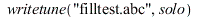

| 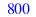 | (25) |
| (26) |
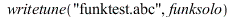
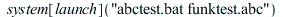
| 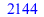 | (27) |